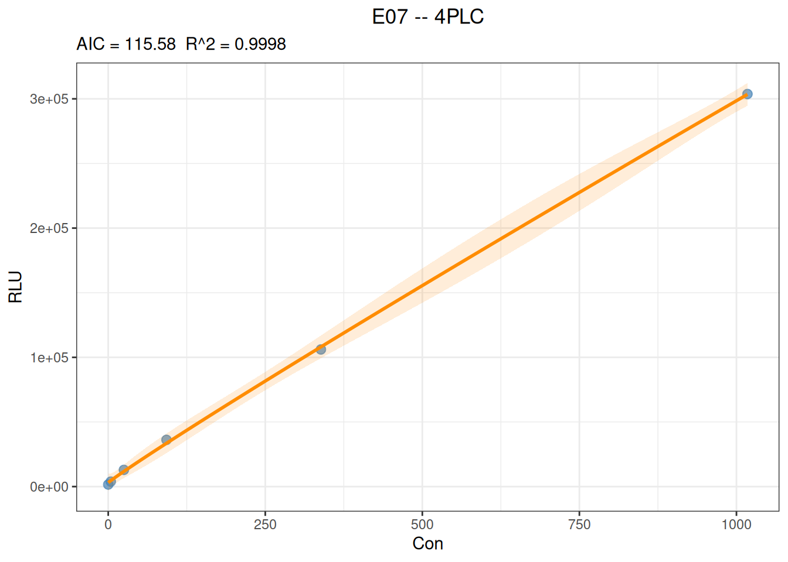
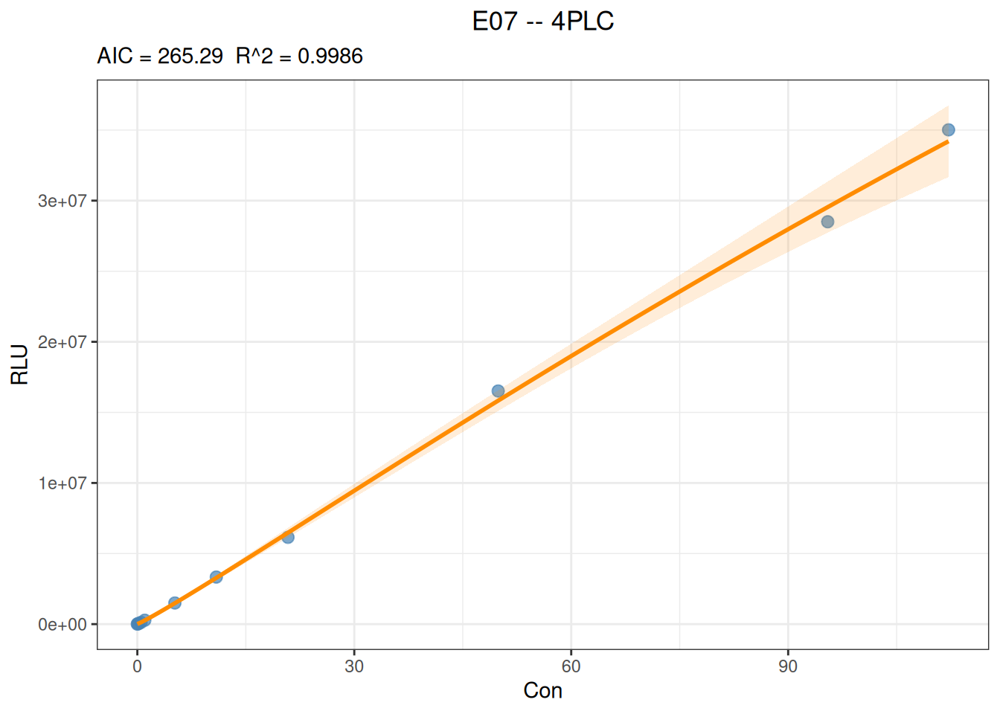

Code
library(ivdtools)
library(readr)This document demonstrates how to fit a four-parameter logistic (4PLC) calibration curve using fit_equation() from the ivdtools package, and how to examine convergence status, residuals, weight effects, and forward and inverse prediction.
4PLC is a nonlinear model. A successfully returned fit object does not imply the model is adequate; formal analysis should also incorporate the calibration point design, lower and upper asymptote coverage, parameter stability, residual structure, repeat-measurement precision, and pre-specified acceptance criteria.
library(ivdtools)
library(readr)In ivdtools, 4PLC corresponds to E07 and can also be invoked by the name "4PLC":
\[y = A + \frac{B-A}{1 + (x/C)^D}\]
Here, \(A\) and \(B\) denote the two asymptotic plateaus, \(C\) denotes the concentration scale at the curve midpoint, and \(D\) controls the curve direction and steepness. The meaning of the parameters should be interpreted in the context of the actual signal direction.
| Function | Purpose |
|---|---|
list_equation() |
View the built-in equation registry |
replicate_to_mean() |
Summarize replicate measurements and optionally compute weights |
fit_equation() |
Fit built-in or custom equations |
coef() |
Extract model parameters |
residuals() |
Extract residuals (observed minus fitted) |
predict() |
Forward prediction of response or inverse estimation of concentration |
plot() |
Plot observed points, fitted curve, and intervals |
compare_equation() |
Compare candidate equations |
View the response-curve models:
list_equation(category = "Response") ID Name Formula Params nP Engine
-----------------------------------------------------------------------
E01 Linear a + b*x a, b 2 lm
E02 Quadratic a + b*x + c*x^2 a, b, c 3 lm
E03 ExpoGrowth a * exp(b * x) a, b 2 nls
E04 ExpoDecay a * exp(-b * x) a, b 2 nls
E05 Power a * x^b a, b 2 nls
E06 Log a + b * log(x) a, b 2 lm
E07 4PLC A + (B - A) / (1 + (x / C)^D) A, B, C, D 4 nls
E08 5PLC A + (B - A) / (1 + (x / C)^D)^E A, B, C, D, E 5 nls
E09 Gaussian a * exp(-(x - b)^2 / (2 * c^2)) a, b, c 3 nls
E10 Michaelis Vmax * x / (Km + x) Vmax, Km 2 nls
E11 Sinusoidal a * sin(b * x + c) + d a, b, c, d 4 nls
E12 Cubic a + b*x + c*x^2 + d*x^3 a, b, c, d 4 lm fit_equation() can use automatic starting values or take them via start; lower, upper, and constraints set parameter bounds or constraints. weights accepts a numeric vector or the built-in schemes "equal", "1/y", "1/y^2", "1/x", "1/x^2".
Note: Weights should reflect the measurement error or variance structure; they should not be chosen only because the curve is positively or negatively correlated. It is best to pre-specify weights based on repeat-measurement precision, residual diagnostics, or the study protocol.
u1 <- read_csv("./data/4PLC-U1.csv", show_col_types = FALSE)
u1str(u1)spc_tbl_ [6 × 3] (S3: spec_tbl_df/tbl_df/tbl/data.frame)
$ Sample: chr [1:6] "s1" "s2" "s3" "s4" ...
$ Con : num [1:6] 0 4.08 24.93 92.75 338.54 ...
$ RLU : num [1:6] 1581 3857 12931 36153 106083 ...
- attr(*, "spec")=
.. cols(
.. Sample = col_character(),
.. Con = col_double(),
.. RLU = col_double()
.. )
- attr(*, "problems")=<externalptr> summary(u1[c("Con", "RLU")]) Con RLU
Min. : 0.000 Min. : 1581
1st Qu.: 9.293 1st Qu.: 6126
Median : 58.840 Median : 24542
Mean : 246.308 Mean : 77388
3rd Qu.: 277.092 3rd Qu.: 88600
Max. :1017.550 Max. :303726 anyDuplicated(u1$Sample)[1] 0sum(!is.finite(u1$Con) | !is.finite(u1$RLU))[1] 0This data contains 6 concentration levels. Because 4PLC requires estimating 4 parameters, the residual degrees of freedom are very few; in addition, the highest concentration does not yet clearly cover the upper plateau, so the model parameters may be unstable. This example is mainly intended to illustrate the operating workflow and should not be used directly as a formal calibration design example.
If each concentration contains replicates, you can fit all observations directly, or first summarize them with replicate_to_mean(). Whether to summarize and how to weight should be stated in the analysis plan.
fit_u1 <- fit_equation(
"4PLC",
data = u1,
x = "Con",
y = "RLU"
)
print(fit_u1)E07 (4PLC)
Formula: A + (B - A) / (1 + (x / C)^D)
Call:
fit_equation(eq = "4PLC", data = u1, x = "Con", y = "RLU")
Residuals:
Min 1Q Median 3Q Max
-1991.214 -1335.541 -252.849 960.620 2652.956
Coefficients:
Estimate Std. Error t value Pr(>|t|)
A 3.10445e+03 2.09875e+03 1.47919 0.277197
B 6.13447e+07 2.60964e+09 0.02351 0.983380
C 2.60778e+05 1.18118e+07 0.02208 0.984391
D -9.58182e-01 1.20691e-01 -7.93917 0.015498 *
---
Signif. codes: 0 '***' 0.001 '**' 0.01 '*' 0.05 '.' 0.1 ' ' 1
Residual standard error: 2775.94 on 2 degrees of freedom
AIC: 115.58 Iterations: 50Do not ignore the optimizer’s convergence information:
fit_u1$fit$convInfo[c("isConv", "finIter", "stopCode", "stopMessage")]$isConv
[1] FALSE
$finIter
[1] 50
$stopCode
[1] -1
$stopMessage
[1] "Number of iterations has reached `maxiter' == 50."The default fit for this data reaches the iteration limit without declaring convergence. Increasing the maximum number of iterations sometimes helps, but cannot resolve a calibration range that does not cover a plateau or parameters that are not identifiable. When convergence is not achieved, inspect the data, model direction, starting values, parameter bounds, and calibration point design in turn, rather than accepting the result based only on the curve appearance.
u1_diagnostics <- data.frame(
Sample = u1$Sample,
Con = u1$Con,
RLU = u1$RLU,
Residual = residuals(fit_u1),
Relative_residual_pct = residuals(fit_u1) / u1$RLU * 100
)
knitr::kable(u1_diagnostics, digits = 2)| Sample | Con | RLU | Residual | Relative_residual_pct |
|---|---|---|---|---|
| s1 | 0.00 | 1581 | -1523.45 | -96.36 |
| s2 | 4.08 | 3857 | -771.83 | -20.01 |
| s3 | 24.93 | 12931 | 1192.12 | 9.22 |
| s4 | 92.75 | 36153 | 2652.96 | 7.34 |
| s5 | 338.54 | 106083 | -1991.21 | -1.88 |
| s6 | 1017.55 | 303726 | 266.13 | 0.09 |
plot(fit_u1, interval = "confidence", level = 0.95)
Residuals should be examined on both the original response scale and the relative scale, and interpreted together with the repeat-measurement variance. For responses spanning several orders of magnitude, looking at original residuals alone may let high-signal points dominate the judgment.
predict(
fit_u1,
newdata = data.frame(Con = c(20, 200, 1000)),
interval = "confidence",
level = 0.95
) x y y_ci_lwr y_ci_upr
20 10095.70 5194.229 14997.17
200 66540.68 59494.141 73587.22
1000 298518.29 289967.527 307069.05The mean confidence interval describes the uncertainty of the fitted mean; the prediction interval also includes single-observation error and is usually wider:
predict(
fit_u1,
newdata = data.frame(Con = c(20, 200, 1000)),
interval = "prediction",
level = 0.95
) x y y_pi_lwr y_pi_upr
20 10095.70 -7.215948 20198.61
200 66540.68 55240.318293 77841.05
1000 298518.29 286223.575001 310813.01predict(
fit_u1,
newdata = data.frame(RLU = c(20000, 100000, 250000)),
inverse = TRUE
) x y
50.2395 20000
311.3672 100000
828.5559 250000Prediction boundaries: Avoid extrapolating beyond the calibration concentration range. Inverse prediction is very sensitive to response error in the plateau region, and non-monotonic models can also have multiple solutions. The current example fit did not converge reliably, so the predictions are used only to demonstrate the interface and cannot be used for quantitative conclusions.
Sandwich assay data typically show increasing signal with increasing concentration. This example first performs an equal-weight fit:
u2 <- read_csv("./data/4PLC-U2.csv", show_col_types = FALSE)
fit_u2_equal <- fit_equation(
"4PLC",
data = u2,
x = "Con",
y = "RLU"
)
print(fit_u2_equal)E07 (4PLC)
Formula: A + (B - A) / (1 + (x / C)^D)
Call:
fit_equation(eq = "4PLC", data = u2, x = "Con", y = "RLU")
Residuals:
Min 1Q Median 3Q Max
-1034493.852 -58331.509 17644.023 45830.410 785037.098
Coefficients:
Estimate Std. Error t value Pr(>|t|)
A -4.19069e+04 2.74298e+05 -0.15278 0.88288329
B 4.01980e+08 9.51404e+08 0.42251 0.68532695
C 1.12895e+03 3.16059e+03 0.35720 0.73147078
D -1.02539e+00 1.32241e-01 -7.75390 0.00011121 ***
---
Signif. codes: 0 '***' 0.001 '**' 0.01 '*' 0.05 '.' 0.1 ' ' 1
Residual standard error: 565331 on 7 degrees of freedom
AIC: 327.64 Iterations: 24When the response variance clearly increases with signal, an inverse-response-squared weight can be evaluated:
fit_u2_weighted <- fit_equation(
"4PLC",
data = u2,
x = "Con",
y = "RLU",
weights = "1/y^2"
)
print(fit_u2_weighted)E07 (4PLC)
Formula: A + (B - A) / (1 + (x / C)^D)
Call:
fit_equation(eq = "4PLC", data = u2, x = "Con", y = "RLU", weights = "1/y^2")
Residuals:
Min 1Q Median 3Q Max
-1038926.254 -2031.562 491.283 35707.649 809345.965
Coefficients:
Estimate Std. Error t value Pr(>|t|)
A 5.66828e+03 2.30614e+02 24.57907 4.7016e-08 ***
B 2.00185e+08 6.72603e+07 2.97627 0.020624 *
C 4.83741e+02 1.74222e+02 2.77658 0.027433 *
D -1.08082e+00 1.02400e-02 -105.54858 1.8062e-12 ***
---
Signif. codes: 0 '***' 0.001 '**' 0.01 '*' 0.05 '.' 0.1 ' ' 1
Residual standard error: 0.042025 on 7 degrees of freedom
AIC: 265.29 Iterations: 7Compare the relative residuals of the two models at each calibration point:
u2_comparison <- data.frame(
Sample = u2$Sample,
Con = u2$Con,
RLU = u2$RLU,
Equal_weight_pct = residuals(fit_u2_equal) / u2$RLU * 100,
Inverse_y2_weight_pct = residuals(fit_u2_weighted) / u2$RLU * 100
)
knitr::kable(u2_comparison, digits = 2)| Sample | Con | RLU | Equal_weight_pct | Inverse_y2_weight_pct |
|---|---|---|---|---|
| c1 | 0.00 | 5637 | 843.43 | -0.55 |
| c2 | 0.05 | 16014 | 275.49 | 3.07 |
| c3 | 0.20 | 47520 | 67.84 | -4.70 |
| c4 | 0.51 | 125038 | 14.11 | -1.46 |
| c5 | 1.03 | 277621 | 4.57 | 4.70 |
| c6 | 5.19 | 1498023 | -4.39 | 0.98 |
| c7 | 10.92 | 3334387 | -1.53 | 1.70 |
| c8 | 20.83 | 6148959 | -6.53 | -5.30 |
| c9 | 49.90 | 16515788 | 4.75 | 4.13 |
| c10 | 95.47 | 28504677 | -3.63 | -3.64 |
| c11 | 112.18 | 35017203 | 1.75 | 2.31 |
data.frame(
Model = c("Equal weight", "1/y^2 weight"),
Median_absolute_relative_residual_pct = c(
median(abs(u2_comparison$Equal_weight_pct)),
median(abs(u2_comparison$Inverse_y2_weight_pct))
),
Maximum_absolute_relative_residual_pct = c(
max(abs(u2_comparison$Equal_weight_pct)),
max(abs(u2_comparison$Inverse_y2_weight_pct))
)
) |>
knitr::kable(digits = 2)| Model | Median_absolute_relative_residual_pct | Maximum_absolute_relative_residual_pct |
|---|---|---|
| Equal weight | 4.75 | 843.43 |
| 1/y^2 weight | 3.07 | 5.30 |
In this example data, the 1/y^2 weight clearly reduces the relative residuals at low-signal points; this only indicates that this weight better matches the relative-error evaluation objective adopted for this data. The formal choice still needs to combine the variance of the replicates at each concentration, the back-calculated concentration bias, model parameter stability, and pre-specified acceptance criteria. The residual standard errors and AIC under different weights have different scales and should not be compared directly without an error model.
plot(fit_u2_weighted, interval = "confidence", level = 0.95)
Competitive assay data typically show decreasing signal with increasing concentration:
u3 <- read_csv("./data/4PLC-U3.csv", show_col_types = FALSE)
fit_u3 <- fit_equation(
"4PLC",
data = u3,
x = "Con",
y = "RLU"
)
print(fit_u3)E07 (4PLC)
Formula: A + (B - A) / (1 + (x / C)^D)
Call:
fit_equation(eq = "4PLC", data = u3, x = "Con", y = "RLU")
Residuals:
Min 1Q Median 3Q Max
-1937.581 -454.210 -28.126 625.582 1807.765
Coefficients:
Estimate Std. Error t value Pr(>|t|)
A -2.81576e+04 2.17005e+03 -12.9755 1.1793e-06 ***
B 1.40035e+06 1.08896e+03 1285.9562 < 2.22e-16 ***
C 1.29783e+02 6.49733e-01 199.7479 4.4162e-16 ***
D 7.82733e-01 2.79342e-03 280.2058 < 2.22e-16 ***
---
Signif. codes: 0 '***' 0.001 '**' 0.01 '*' 0.05 '.' 0.1 ' ' 1
Residual standard error: 1093.1 on 8 degrees of freedom
AIC: 207.11 Iterations: 5fit_u3$fit$convInfo[c("isConv", "finIter", "stopCode", "stopMessage")]$isConv
[1] TRUE
$finIter
[1] 5
$stopCode
[1] 1
$stopMessage
[1] "Relative error in the sum of squares is at most `ftol'."u3_diagnostics <- data.frame(
Sample = u3$Sample,
Con = u3$Con,
RLU = u3$RLU,
Relative_residual_pct = residuals(fit_u3) / u3$RLU * 100
)
knitr::kable(u3_diagnostics, digits = 2)| Sample | Con | RLU | Relative_residual_pct |
|---|---|---|---|
| m1 | 0 | 1400548 | 0.01 |
| m2 | 40 | 991716 | -0.20 |
| m3 | 60 | 897247 | 0.20 |
| m4 | 79 | 822749 | -0.05 |
| m5 | 138 | 669646 | 0.11 |
| m6 | 187 | 585293 | 0.10 |
| m7 | 297 | 462119 | -0.07 |
| m8 | 523 | 330399 | -0.19 |
| m9 | 737 | 263095 | -0.25 |
| m10 | 1266 | 177260 | -0.12 |
| m11 | 1608 | 146827 | 0.11 |
| m12 | 2218 | 112252 | 0.61 |
plot(fit_u3, interval = "confidence", level = 0.95)
In this example, the equal-weight fit has already converged and the in-sample relative residuals are small, but you should still decide whether weights are needed based on the replicate measurement variance. The signal direction itself is not a basis for choosing between equal-weight and weighted fitting.
convInfo; do not treat reaching the maximum iterations as successful convergence.